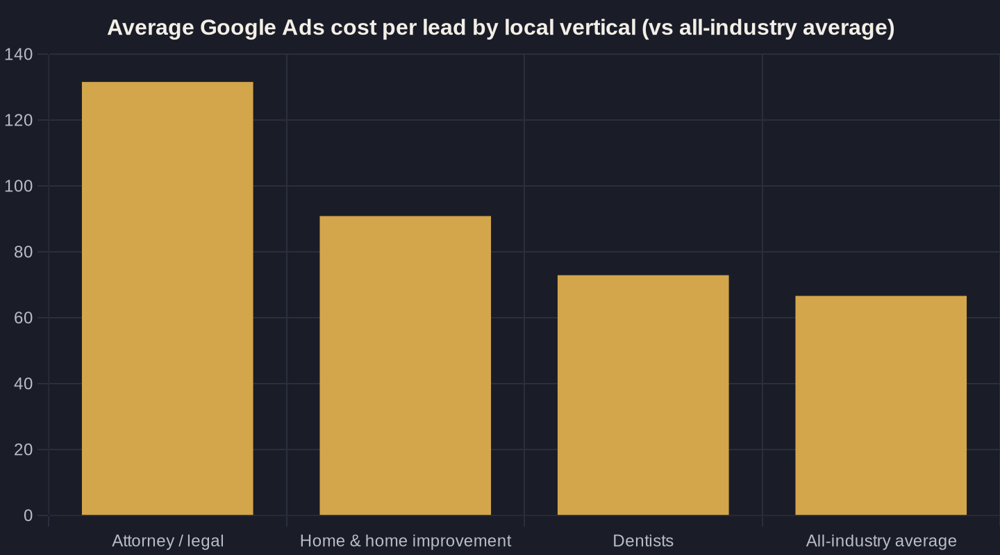

Choosing (and Blocking) the Right Google Ads Keywords for Local
Your keyword list quietly sets your cost per booked job. Here's how to pick the searches that bring ready local buyers — and block the ones that drain a small budget.
Key takeaways
- Your keyword choice sets your cost per booked job before you write an ad — local cost per lead runs from a ~$67 average to $131+ for legal.
- Match intent, not words: bid on ready-to-hire and comparison searches, and refuse research-only DIY terms.
- Negative keywords are the single highest-leverage move — accounts that use them convert at 13% versus 4.6% with none.
- Count calls as conversions; phone leads drive 10-15x more revenue, and form-fill-only tracking will cut your best call-driving keywords.
- Build the negative list before launch and mine the search terms report weekly — 15% of searches are brand-new every day, so the list is never finished.
Why Your Google Ads Keywords for Local Business Set Your Cost Per Job
Every keyword you switch on in Google Ads carries a price tag, and that price decides whether the phone rings at a profit. Across 13,474 U.S. search-ad campaigns measured over a recent 12-month window, the average search cost per lead is $66.69, at a $5.42 average cost-per-click and an 8.18% conversion rate (cost per lead = what you pay for one inquiry; CPC = cost per click). That is the all-industry average. Your local vertical decides where you actually land.
The spread is brutal. The same benchmark study puts attorney and legal leads at $131.63, home and home improvement at $90.92, and dentists at $72.97. So your Google Ads keywords for local business are not a setup detail to rush through — they set your cost per booked job before you write a single ad. This is Owner's Math in its simplest form: trace one dollar from impression to booked job, and the keyword is the first fork in the road. The full system lives in our Google Ads for Local Service Businesses playbook; this post zooms in on the part that quietly controls everything downstream.
Match Intent, Not Just Words
Local demand is real and large. 46% of all Google searches carry local intent, and 46% of consumers say they "always" or "often" add "near me" to a search. That demand concentrates on Google — 84% of consumers use Google to find and read reviews of local businesses — so a tight, intent-matched keyword list is where a local owner's budget does the most work.
The trick is matching intent, not just words. A good local keyword list sorts searches into three buckets:
- Ready to hire — "emergency plumber near me," "ac repair [city]," "[service] open now." These people want to book today. Bid here first.
- Comparing — "best [service] in [city]," "[service] cost," "[service] reviews." In-market but shopping. Worth bidding with proof-heavy ads and a strong landing page.
- Research only — "how to fix a leaking faucet," "why is my furnace loud." These are DIY searchers, mostly money pits for a local advertiser.
Choosing your Google Ads keywords for local business means deliberately buying the first two buckets and refusing the third. Geo-modifiers — your city, your neighborhoods, "near me" — are how you keep the list anchored to people you can actually serve.

Match Types: How Tight to Hold the Reins
Even a perfect keyword list leaks, because the searches themselves keep changing. Google has stated repeatedly that 15% of the searches it sees every day are brand-new queries it has never seen before. No list, however careful, can anticipate every phrasing — which is exactly why match types and negatives exist.
Match type controls how loosely Google can interpret your keyword. Broad match casts the widest net and, for a small local budget, usually drags in the most waste. Phrase and exact match hold the reins tighter, trading reach for relevance. For most local service businesses starting out, lean toward phrase and exact on your money terms, watch the actual search terms report weekly, and only loosen up once your negative list is doing its job. How much budget you put behind that list is its own decision — we cover it in the local budget guide.
Negative Keywords: The Highest-Leverage Move You're Not Making
Blocking is the other half of keyword strategy, and it is where most local accounts bleed. WordStream's study of 15,666 Google Ads accounts found the average business wastes $1,127.54 per month, while accounts using at least one negative keyword convert at 13% versus 4.6% for accounts with none — roughly three times higher. Negative keywords tell Google what not to show your ad for.
For a local service business, the standing negative list almost always includes "free," "cheap," "DIY," "how to," "salary," "jobs," "career," and the names of cities and regions you don't serve. Add the wrong-service terms too — a plumber should block "hvac," "electrician," and "appliance repair" unless they offer them. Build this list before launch, then mine the search terms report every week and add the junk you see. This single habit does more to protect a small budget than any bid tweak.
| Search term type | Example | Choose or block | Why |
|---|---|---|---|
| Ready-to-hire local | emergency plumber near me | Choose (bid) | Wants to book today |
| Service + city | ac repair [your city] | Choose (bid) | In-market and inside your service area |
| Brand / your name | [your business name] | Choose (cheap, defensive) | Cheap clicks that protect your name |
| Research / DIY | how to fix a leaky faucet | Block (negative) | Won't hire anyone |
| Job-seeker | plumber jobs near me | Block (negative) | Looking for work, not service |
| Bargain / free | free ac inspection, cheap plumber | Block (negative) | Wrong economics for a paid job |
| Out-of-area | [service] [city you don't serve] | Block / geo-exclude | You can't serve them |

Count Calls as Conversions, or You'll Cut Your Best Keywords
Here is the trap that makes owners block their best keywords: judging performance on form fills alone. For local services, the conversion is usually a phone call. 40% of home-services consumers who call a business from a search go on to buy, and phone calls generate 10 to 15 times more revenue than web leads.
If you only count web forms, a keyword that drives ten calls and one form looks like a loser — so you pause it, and you just cut your strongest performer. Set up call tracking before you optimize, count calls and forms together, and only then decide what to keep, cut, or double. The keyword choice and the call data have to be read together, or the math lies to you.
A Simple Choose-and-Block Build
Put the two halves together and choosing your Google Ads keywords for local business gets simple. You pick a short list of high-intent, geo-anchored terms, and you block everything that signals a non-customer. The table below is the working version I hand to owners — it sorts the most common local search terms into choose or block, with the reason attached.
Notice the pattern: you bid on people who are ready and local, and you block researchers, job-seekers, bargain-hunters, and anyone outside your service area. The same discipline applies whether you run Search campaigns or weigh Google's Local Services Ads — we compare the two in Local Services Ads vs Google Ads. Whatever you send the click to, the landing page has to finish the job the keyword started.
The Owner's Math of Keyword Choice
Step back and the whole thing is a money decision. Your vertical sets a baseline cost per lead — and the chart below shows just how far apart those baselines sit. Tighter keywords and a real negative list pull you below your vertical's average; loose, untended keywords push you above it.
Run the numbers like an owner. If your average job is worth $600 and your vertical's cost per lead is $90, you can pay for six leads to land one job and still come out ahead — but only if those six leads are local, in-market, and counted correctly (calls included). That is the entire game: choose the keywords that bring ready buyers, block the ones that don't, and measure both. For the full framework behind it, start with Owner's Math.
If you'd rather have someone trace that dollar with you — from keyword to booked job — that's the conversation I have with owners every week. Book a call, or get the next breakdown like this one straight to your inbox.
Sources
- WordStream — 2026 Google Ads Benchmarks (CPC, CTR, Conversion Rate & CPL by Industry) (2026)
- WordStream — Our Biggest Google Ads Performance Study Yet (negative keywords & wasted spend) (2026)
- Search Engine Land — Google reaffirms 15% of searches are new, never been searched before (2017)
- Invoca — Home Services Marketing Statistics (phone calls from search) (2025)
- BrightLocal — Local SEO Statistics (2026 update) (2026)
- BrightLocal — Local Consumer Review Survey 2025 (2025)
Want this run on your numbers?
Book a call and we will run the Owner's Math on your business — clear numbers, a straight plan, no pitch. Or read the free Playbook first.